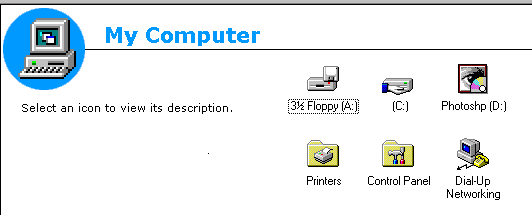

Welcome to ThatXPUser
subsite!
(made with netscape composer 4!)
Links: Go
to Retrosite Index of ported fourm posts
Sorry - 2020-7-10 Time: 4:46 PM (UTC -5)
Hey guys! I'm sorry... i'm really sorry for not updating this regularly
like i used to. I switched my os every other week and lost my NT VM. i'm
now doing this on a XP VM and i had no time to do anything else, ill be
porting some posts from mg to static html, bye.
Updated Netscape! - 2020-06-01 Starting time: 16:49 Finish time:
[Unknown to man] (UTC -5)
I went to winworldpc to get composer
4.08 since i was getting bored of using gold 3 plus the limmitations it
had made it not that fun when doing different things... I got composer
and it wasn't just composer

IT CAME WITH EVERYTHING?!
Worth it.(btw it supports bmps now but i will still use gifs ;) )
Updated IE - 2020-05-31 Starting time: 16:52 Finish time: 17:09
(UTC -5)
NT came with Internet Explorer 2 which is kinda crap most of the websites
didnt load and if they did it would be a bad request. I downloaded IE4
which made nt more ugly ngl. It installed Active Desktop which is
nice it came bundled with some weird tv channels thing then i found out

IT LITTERALLY UGH IDK HOW TO EVEN DESCRIBE MY ANGER
it also really looks like ie updates update your whole kernel
Hello World! - 2020-05-31 Starting time: 14:37 Finish time: 15:33
(UTC -5)
I finally redesigned my website... to a format that doesnt support almost
anything new, Well its beter than IE2 /shrug
I'm currently working on more subsites made on this and featuring my
NT4 vm which is the one i'm typing this on